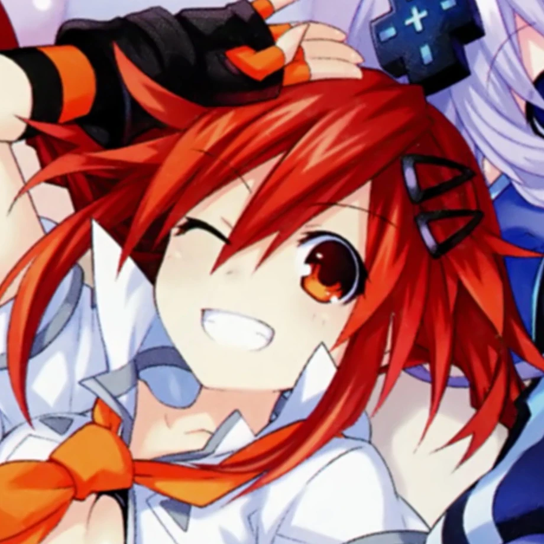
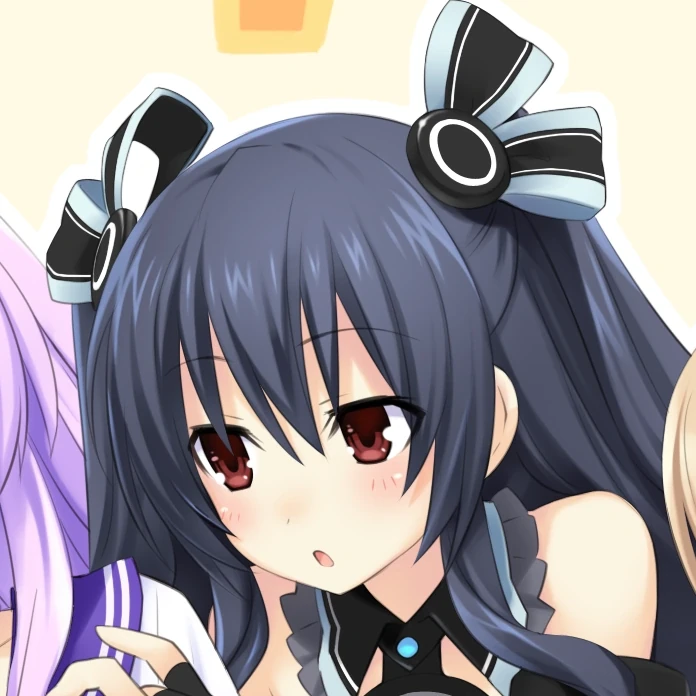
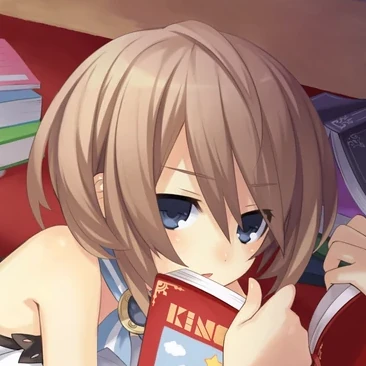

⥠ğ§ğğ©ğğ®ğ§ğ ✦
multi-muse roleplay account by That1M8Head #VelocityMun
All Muses
 Neptune
Neptune🍮💎💜💙
 Nepgear
Nepgear⚙️💝
 Plutia
Plutia🧸🎴❤️‍🔥 Uzume
🌀🧡
 Noire
Noire⚔️🖤 Uni
🏹⬛ Blanc
📕🤠Vert
🎮💚
 Rom
Rom🔵🟦 Ram
🔴🟥 Compa
🏥
 IF
IF🍃
Indicators
Emoji indicators are used to denote the current speaker.
Example
⥠ğ§ğğ©ğğ®ğ§ğ ✦
@sxperdimensixnㅤ
{🍮} â Yoo-hoo! It's everyone's favourite protag, Neptune~! â
Neptune waves at the website visitor.
No, this isn't a real Twitter post. Looks convincing though, right?
ㅤ12:34 PM · May 6, 2023 · 69 Views
The emoji used here is 🍮, which corresponds to Neptune in her Human Form.
Guidelines
Both story and non-story RPs are welcome. Serious and non-serious RPs happen on this account.
SFW RPs are preferred, but lewd/semi-NSFW themes may appear. Proper NSFW RP should be in DMs or Twitter Circle only.
Dimension
Most of the muses on this account are from a future set in the Super Dimension (HDN 1 and/or Re;Birth 1), and they're not from the main Hyper Dimension (mk2 onwards).
This is definitely not a way for me to write around the fact I haven't played all the games.
The exception is for characters like Uzume, who either do not have a Super Dimension counterpart and/or aren't even from the Hyper Dimension to begin with.